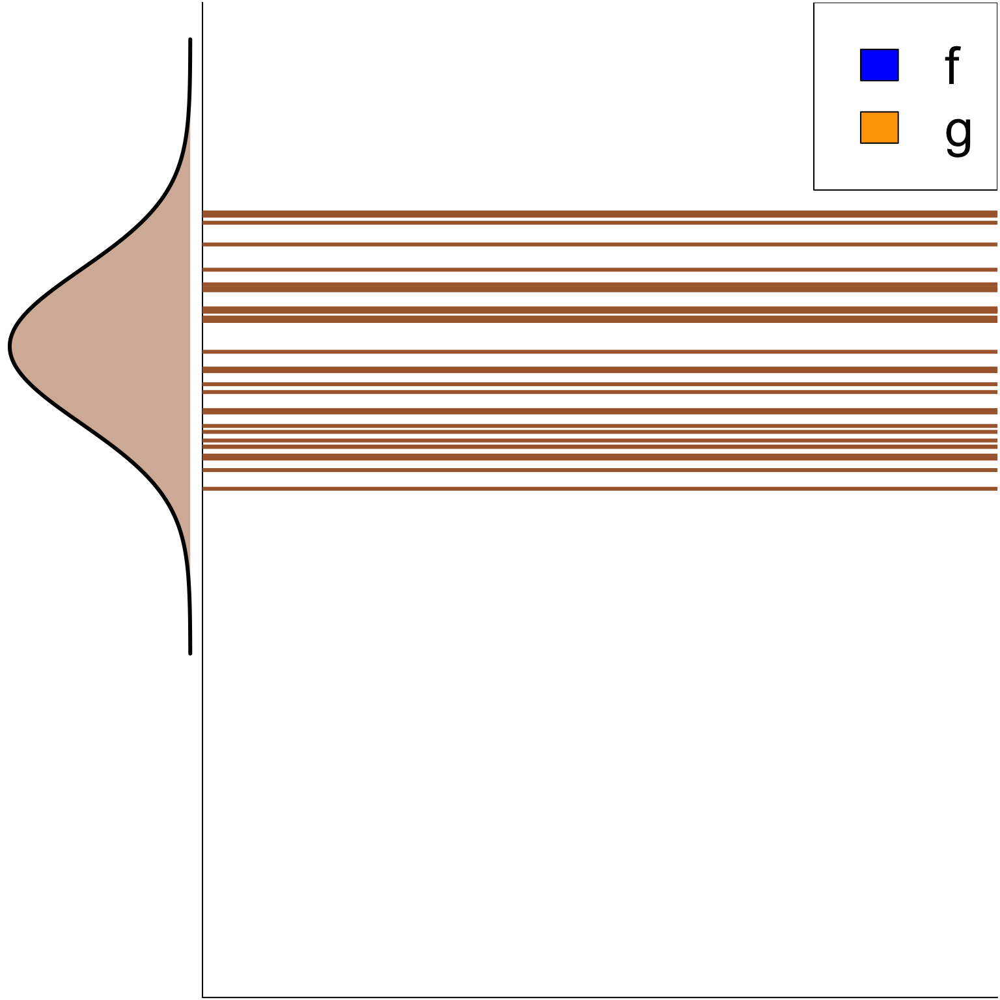
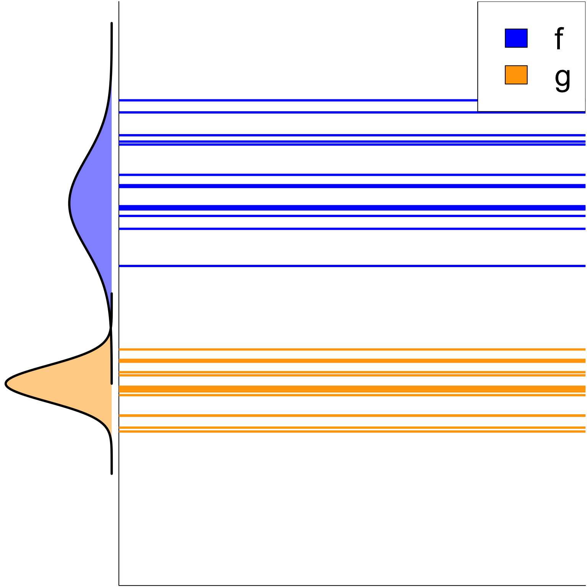
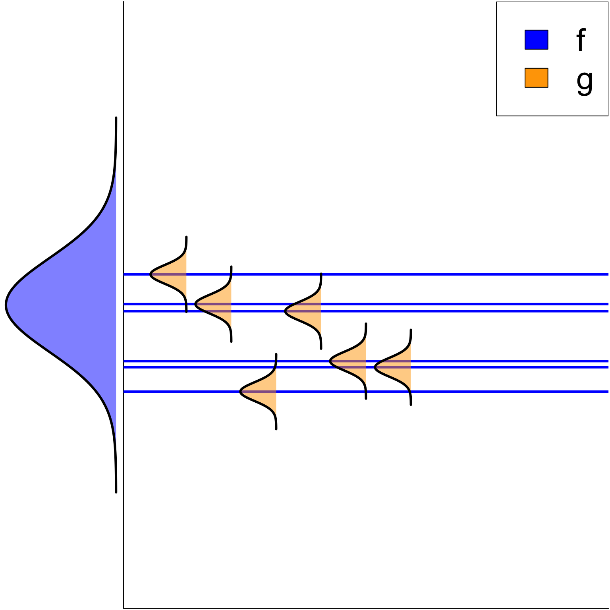
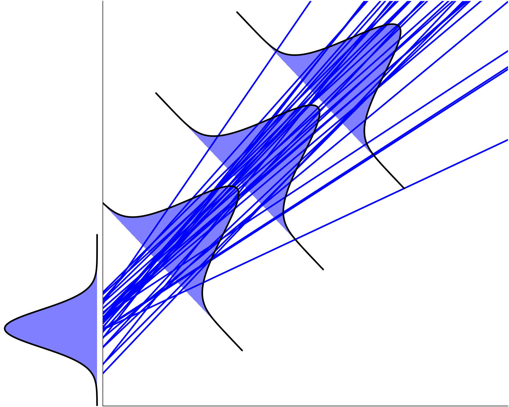
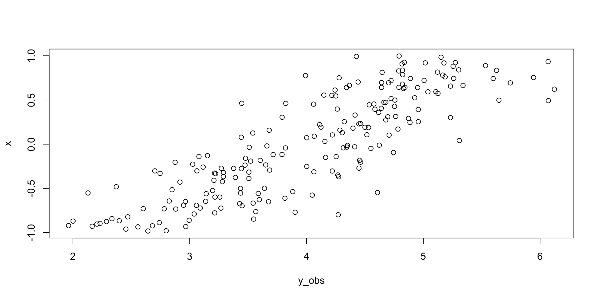

Complex hierarchical models
2024-05-01
Hierarchical model structure so far
Mathematically, the basic structure of a hierarchical model is
\[\mathbf{y} = \mathbf{X} \boldsymbol{\beta} + \mathbf{Z}\mathbf{b} + \boldsymbol{\varepsilon}\]
where
- \(\mathbf{y}\) : Vector of response variable
- \(\mathbf{X}\) : Matrix of explanatory variables on which no hierarchies are accounted for
- \(\mathbf{Z}\) : Matrix of explanatory variables on which hierarchies are accounted for
- \(\boldsymbol{\beta}\) : parameter estimated without a hierarchy
- \(\mathbf{b}\) : parameter estimated with a hierarchy
- \(\boldsymbol{\varepsilon}\) : a vector that follows a Gaussian distribution such that \({\cal N}(0, \sigma^2)\)
“Complex” hierarchical model
By “complex” we refer to hierarchical models for which more than one parameters are accounted for in a parameter hierarchy.
As we will see, there are a number of ways this can complexify the structure of a model in ways that are not always obvious.

“Complex” hierarchy on the intercept
Interacting hierarchies
lme4 notation : y ~ (1 | f:g)
This model assumes that factors f and g interact to make a hierarchy.
Mathematically, it can be translated to
\[\mathbf{y} \sim \mathcal{MVN}(\mathbf{b}_{f\times g },\sigma^2\mathbf{I})\] or
\[y_i = b_{f[i]\times g[i]} + \varepsilon \quad\forall\quad i = 1\dots n\]
where \[\mathbf{b}_{f\times g} \sim \mathcal{N}\left(\mu_{f\times g}, \sigma^2_{f\times g}\right)\]
Note that a multi-factor hierarchy can be constructed by multiplying the levels of each factor to account for a more complexe hierarchy.
Interacting hierarchies
Multiple independent hierarchy
lme4 notation : y ~ (1 | f) + (1 | g) or y ~ 1 + (1 | f) + (1 | g)
This model assumes there is a hierarchy that varies among two factors that are independent from one another.
Mathematically, it can be translated to
\[\mathbf{y} \sim \mathcal{MVN}(\mathbf{b}_{f} + \mathbf{b}_{g},\sigma^2\mathbf{I})\] or
\[y_i = b_{f[i]} + b_{g[i]} + \varepsilon \quad\forall\quad i = 1\dots n\]
where
\[\mathbf{b} \sim \mathcal{N}\left(\begin{bmatrix} \mu_f\\ \mu_g\\ \end{bmatrix} , \begin{bmatrix} \sigma^2_f & 0\\ 0& \sigma^2_g\\ \end{bmatrix} \right)\]
Here, we are dealing with a model that has two intercepts, which are sampled independently so that the \(b\)s will change for a sample \(i\) only when the the level of factor \(f\) and the level of factor \(g\) changes independently.
Multiple independent hierarchy
Nested hierarchies ?
lme4 notation : y ~ (1 | f/g) or y ~ (1 | f) + (1 | f:g)
This model assumes there is a hierarchy that varies among the levels of factor f and among the levels of factor g but only within the levels of factor f.
Mathematically, it can be translated to
\[\mathbf{y} \sim \mathcal{MVN}(\mathbf{b}_{f}+\mathbf{b}_{f\times g},\sigma^2\mathbf{I})\] or
\[y_i = b_{f[i]}+b_{f[i]\times g[i]} + \varepsilon \quad i = 1\dots n\]
where
\[\mathbf{b} \sim \mathcal{N}\left(\begin{bmatrix} \mu_f\\ \mu_{f\times g}\\ \end{bmatrix}, \begin{bmatrix} \sigma^2_f & 0\\ 0& \sigma^2_{f\times g}\\ \end{bmatrix} \right)\]
Here, the model has two independent hierarchy, one changes for a sample \(i\) as a single intercept hierarchy and the other will change for a sample \(i\) only when the level of factor \(g\) is within the level of factor \(f\).
Nested hierarchies ?
Other “complex” hierarchies
Uncorrelated intercept and slope hierarchy
lme4 notation : y ~ x + (x || f) or y ~ 1 + x + (1 | f) + (0 + x | g)
This model assumes there is a hierarchy that varies independently among the levels of factor f for the intercept and the slope.
Mathematically, it can be translated to
\[\mathbf{y} \sim \mathcal{MVN}(\boldsymbol\beta_0+\boldsymbol\beta_1\mathbf{x}+\mathbf{b}_{0f}+\mathbf{b}_{1f}\mathbf{z},\sigma^2\mathbf{I})\] or
\[y_i = \beta_0 + \beta_1x_i+b_{0f[i]}+b_{1f[i]}z_i + \varepsilon \quad\forall\quad i = 1\dots n\]
This is because in this model
\[\begin{bmatrix} b_0\\ b_1\\ \end{bmatrix} \sim \mathcal{N}\left(\begin{bmatrix} \mu_{b_0f}\\ \mu_{b_1f}\\ \end{bmatrix}, \begin{bmatrix} \sigma^2_{b_0f} & 0\\ 0& \sigma^2_{b_1f}\\ \end{bmatrix} \right)\]
Note : In this formulation \(\mathbf{x}=\mathbf{z}\). Similarly, \(x_i=z_i\).
Uncorrelated intercept and slope hierarchy
A small step back
The structure of the hierarchy discussed so far were “less complex” in the sense that
- A single variance parameter is estimated
\[\sigma^2_{f}\]
- Multiple independent variance parameters are estiamted
\[ \begin{bmatrix} \sigma^2_f & 0\\ 0& \sigma^2_{g}\\ \end{bmatrix} \]
In Bayesian, having uncorrelated variance allows us to sample variance parameter independently even with mutiple factors, which is computationally more efficient.
From this point on, we will look at more complex covariance structures where the hierarchical levels are not independent from each other.
Correlated intercept and slope hierarchy
lme4 notation : y ~ x + (x | g) or y ~ 1 + x + (1 + x | g)
This model assumes the hierarchy between the intercept and the slope is correlated.
Mathematically, it can be translated to
\[\mathbf{y} \sim \mathcal{MVN}(\boldsymbol\beta_0 + \boldsymbol\beta_1\mathbf{x}+\mathbf{b}_{0f} +\mathbf{b}_{1f}\mathbf{z},\mathbf{\Sigma})\] or
\[y_i = \beta_0 + \beta_1x+b_{0f[i]} + b_{1f[i]}z_i + \varepsilon \quad\forall\quad i = 1\dots n\]
In this model
\[\begin{bmatrix} b_0\\ b_1\\ \end{bmatrix} \sim \mathcal{N}\left(\begin{bmatrix} \mu_{b_0f}\\ \mu_{b_1f}\\ \end{bmatrix}, \begin{bmatrix} \sigma^2_{b_0f} & \rho_{b_0,b_1}\sigma_{b_0f}\sigma_{b_1f} \\ \rho_{b_0,b_1}\sigma_{b_0f}\sigma_{b_1f} & \sigma^2_{b_1f} \end{bmatrix} \right)\]
Note : In this formulation \(\mathbf{x}=\mathbf{z}\). Similarly, \(x_i=z_i\).
Correlated intercept and slope hierarchy
The covariance structure \[\begin{bmatrix} b_0\\ b_1\\ \end{bmatrix} \sim \mathcal{N}\left(\begin{bmatrix} \mu_{b_0f}\\ \mu_{b_1f}\\ \end{bmatrix}, \begin{bmatrix} \sigma^2_{b_0f} & \rho_{b_0,b_1}\sigma_{b_0f}\sigma_{b_1f} \\ \rho_{b_0,b_1}\sigma_{b_0f}\sigma_{b_1f} & \sigma^2_{b_1f} \end{bmatrix} \right)\]
needs to be discussed a bit more.
Notation
In the covariance matrix,
- \(\rho_{b_0,b_1}\) is the correlation between \(b_0\) and \(b_1\)
- \(\rho_{b_0,b_1}\sigma_{b_0}\sigma_{b_1}\) is the covariance between \(b_0\) and \(b_1\)
Interpretation
A covariance matrix with non-zero covariance describes dependence between the \(b\)s, which can tell us both the strength of the relation between pairs of parameters and the variance structure.
Correlated intercept and slope hierarchy
So far what we have done

What we can do now !

Combining different types of hierarchy
With what we learned so far, it is possible to build more complex model by combining the building blocks we went over in the last few hours.
The best way to do this is to immerse ourselve into a particular problem.
So, in the next slides we will discuss about the pumpkinseed (Lepomis gibbosus)

Combining different types of hierarchy
Fictive context
Pumpkinseed (Lepomis gibbosus) growth has been studied in 15 lakes of Estrie during the famous ichthyology course given at Université de Sherbrooke in the past 30 years.
During these ichthyology courses, fish are sampled, measured and tag in all 15 lakes and every year fish are recaptured by students and remeasured. So far, there has been 10 teaching assistants showing there own specific way to measure Pumpkinseed, with, albeit, uneven levels of precision.
Your superviser thinks that Pumpkinseed growth is influenced by water temperature, which has also been sampled every time fish were measured.
After 30 years of data gathering, 123 fish have been sampled during 17 consecutive years.
Pumpkinseed growth example
Question
Is the growth of Pumpkinseed influenced by water temperature?

Try to build the model that best answer this question
To have the most precise model, we need to account for lakes area and depth as well as control for the temperature variation in between lakes and for divergences in sampling measurements of each year (wink, wink… teachers assistant may have an influence here as well).